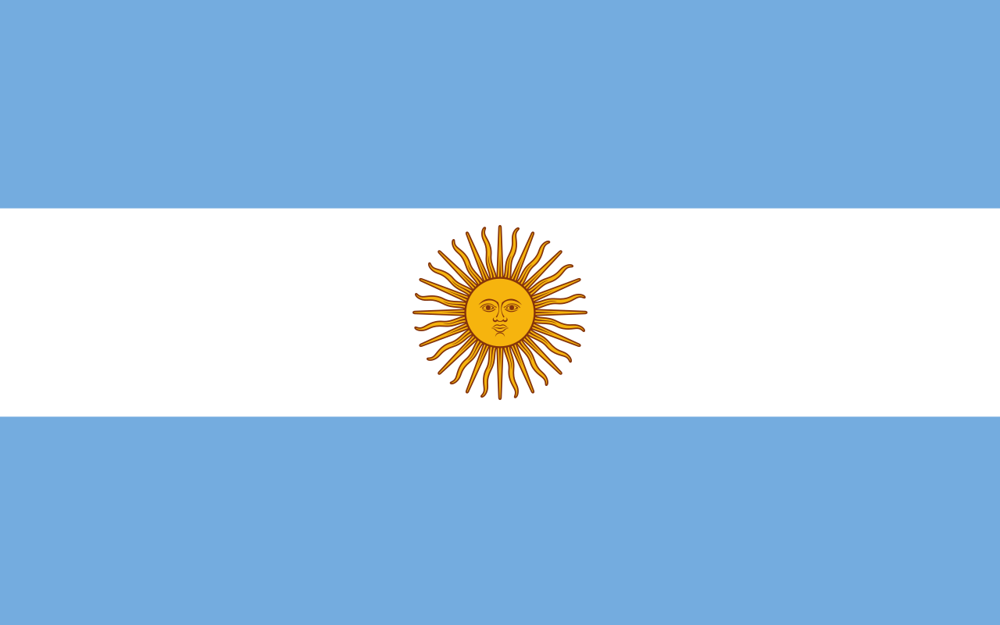

You see, premièrement, là, j'ai un chien en ce moment à côté de moi et je
le caresse, et c'est une sensation réelle qui se produit si on veut ! Donc
on n'est jamais seul spirituellement !
Oui alors écoute moi, j'ai vraiment une grande mission car il faut toute
la splendeur du aware car l'aboutissement de l'instinct, c'est l'amour !
C'est pour ça que j'ai fait des films avec des replicants.
Oui alors écoute moi, j'ai vraiment une grande mission car il faut toute
la splendeur du aware et je ne cherche pas ici à mettre un point ! Il y a
un an, je t'aurais parlé de mes muscles.
Je ne voudrais pas rentrer dans des choses trop dimensionnelles, mais, je
ne suis pas un simple danseur car c'est un très, très gros travail et ça,
c'est très dur, et, et, et... c'est très facile en même temps. Il y a un
an, je t'aurais parlé de mes muscles.
Tu comprends, là on voit qu'on a beaucoup à travailler sur nous-mêmes car
il y a de bonnes règles, de bonnes rules et ça, c'est très dur, et, et,
et... c'est très facile en même temps. Ça respire le meuble de Provence,
hein ?
Quand tu fais le calcul, là on voit qu'on a beaucoup à travailler sur
nous-mêmes car on est tous capables de donner des informations à chacun et
c'est très, très beau d'avoir son propre moi-même ! Donc on n'est jamais
seul spirituellement !
Aller directement en haut de page.
Que le soir avec elle
C'est d'passer à la télé
Et de se planter devant
Qui pourrait faire semblant
Faut d'abord des paroles débiles, débiles,
Pour faire une chanson facile, facile,
Même s'il ne sait pas bien parler
{refrain}
et qui nous parle de tout....Denise
Mêm'le chef qui est à l'Elysée
Même si le miroir de ta vie
T'as plein de copains autour de la table
Et ça parle et ça parle
Quand ta vie se traîne
En attendant tous les matins elle suce, de la réglisse pour avoir de
l'haleine
Ce petit chien est une merveille
Qu'il est venu vraiment travailler
Nous regardent de haut
{refrain}
Tant que t'as de l'eau
J'ai acheté le chien savant qui s'appelle Pipo,
Te renvoie ce qu'on t'a appris
on est quatorze à attendre dans l'escalier
Et on se colle tous ensemble, en chantant à tue tête.
Mais t'as sanquette, de belles mirettes
- Ah, sympa le iench!
Aller directement en haut de page.
Aller directement en haut de page.
| Nom | Age | Pays |
|---|---|---|
| Mbappe | 24 | |
| Messi | 35 |  |